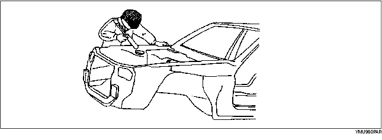
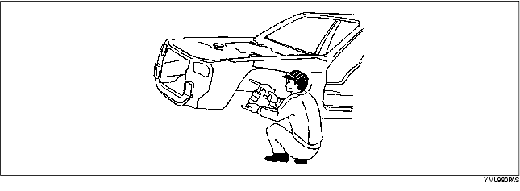
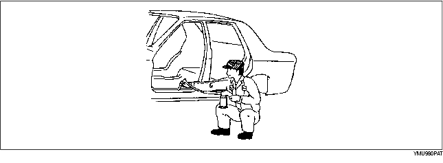
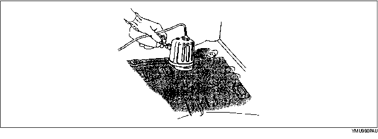

• Falls nötig, Karosserieabdichtmasse auftragen.
• An Stellen, an denen das Auftragen von Karosserieabdichtmasse nach dem Einbau schwierig ist, diese vor dem Einbau aufbringen.

• Unterbodenschutz auf die notwendigen Stellen der Karosserie auftragen.

• Korrosionsschutz (Wachs, Öl, usw.) auf die Rückseite des geschweißten Bereichs auftragen.

• Antidröhnmatten mittels einer Infrarotlampe befestigen.
